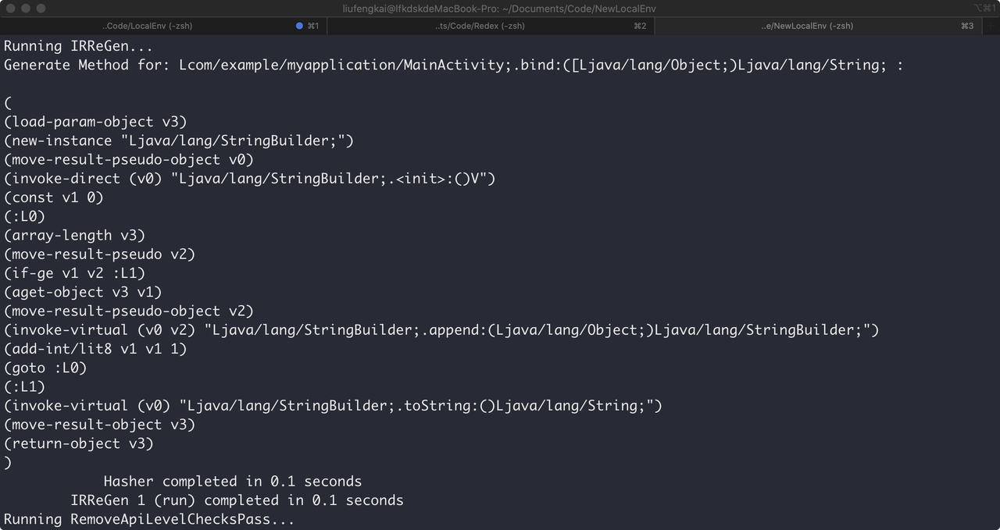
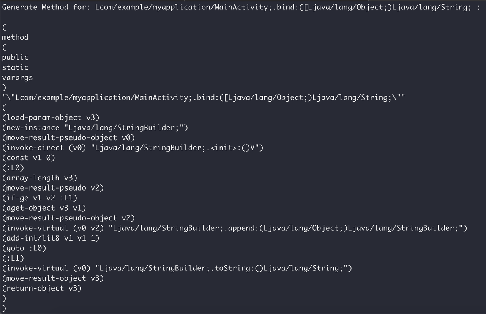
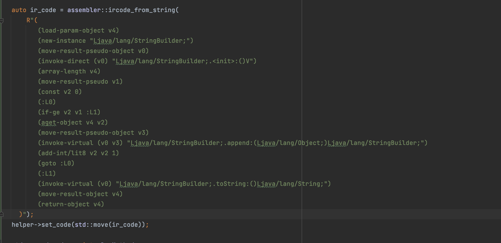

A better way to write outline method or modify ir code in redex.
Background
In Redex, we may often modify/insert methods’ ir code and redex actually supported some ways to write these. Such as :
auto insn = (new IRInstruction(OPCODE_NEW_INSTANCE))
->set_type(DexType::make_type("LFoo;"));
Or just us dasm api :
auto insn = dasm(OPCODE_NEW_INSTANCE, DexType::make_type("LFoo;"), {});
It’s just fine. But if we want to write ir codes which have more complex logic, or even if we want to write an outline method directly. It will be very difficult to write the right code and verify them after every time we change the api.
Specifically, the method contains several blocks and entry point or several if/switch structure and mult-conditions. Maybe this is why there is no much complex outline method in redex pass.
It seems like StringBuilderOutline or InstructionSequenceOutlinerPass is the most complex generator method in redex. You could see that in their create_outlined_method method.
So I think we could improve the experience of writing the outline method or complex ir code. In LLVM, we have a pass named Cpp Backend what we input LLVM IR (such as we call it code) and get the IR builder codes which could build code we input by cpp.
You could get LLVM CxxBackend from : https://github.com/zhangjiantao/llvm-cxxapi
Use ir to write ir is a better way to write complex ir code.
How to use GenAsExpr ? When should we use it ?
For example, I’m writing a new StringBuilderOutline pass to reduce spec string builder method calls. So I need to write a generic method to handle these intermediate results and append them into a string builder. But using IRCode APIs to write this method is difficult and easy to make mistake. (Because it has a for-loop, we need to de-sugar it by mind to write some ir like labels with goto and insert some branch targets).
Step 1: write method in java demo.
So we could use IRReGen pass to resolve this work. What method we actually need is just like this :
@Keep
public static String bind(Object... args) {
StringBuilder builder = new StringBuilder();
for (int i = 0; i < args.length ; i++) {
builder.append(args[i]);
}
return builder.toString();
}
So we write it in a demo project and add @Keep to ensure it will be saved in the release version. Step 2: add pass in redex.config Add IRReGenPass into our demo redex.config and add args to array named gen_s_expr_for like the following code.
{
"redex": {
"passes": [
"IRReGenPass",
// other pass.
]
},
"IRReGen": {
"gen_s_expr_for": [
"Lcom/example/myapplication/MainActivity;.bind:([Ljava/lang/Object;)Ljava/lang/String;"
]
},
// ... other params
}
ALERT: Write the JVM method description with the complete method type signature. Step 3: get the result in log and use it ! Run redex compile and you will get the following log in shell:  UPDATE now support the convert whole method to s_expr  Log prints the target method in the s-expr way. So we could use api in IRAssembler.h to create DexMethod from s-expr data. Such as:  Now we could use this s-expr code as DexMethod directly ~~~ The code will be more readable and easier to modify (just re-gen it).
Implement
void GenAsSExpr::run_pass(DexStoresVector& stores,
ConfigFiles& conf,
PassManager& mgr) {
const auto& scope = build_class_scope(stores);
auto& method_names = this->m_ir_gen_methods;
walk::parallel::methods(scope, [&method_names](DexMethod* m) {
auto method_name = m->get_deobfuscated_name();
auto in_list = [&method_names](std::string &name) -> bool {
return std::find(method_names.begin(), method_names.end(), name) !=
method_names.end();
};
if (!in_list(method_name)) {
return;
}
// auto code = m->get_code();
auto s_expr = assembler::method_to_s_expr(m);
auto s_expr_str = s_expr.pretty_str();
std::cout << "Generate Method for: " << method_name << " : \n" << std::endl;
std::cout << s_expr_str << std::endl;
});
auto& classes_names = this->m_ir_gen_classes;
walk::parallel::classes(scope, [&classes_names] (DexClass* cls) {
auto cls_name = cls->get_deobfuscated_name();
auto in_list = [&classes_names](std::string &name) -> bool {
return std::find(classes_names.begin(), classes_names.end(), name) !=
classes_names.end();
};
if (!in_list(cls_name)) {
return;
}
// auto code = m->get_code();
auto s_expr = assembler::class_to_s_expr(cls);
auto s_expr_str = s_expr.pretty_str(/* depth */ 3);
std::cout << "Generate Class for: " << cls_name << " : \n" << std::endl;
std::cout << s_expr_str << std::endl;
});
}
We often use s-expr like expr in some Lisp-like langs. And many languages could compile their code into s-expr for serialization or check error. Redex also supports compile ir to s-expr and re-compile ir code from s-expr. So I added a new pass to accept method descriptions and compile it to s-expr. I also added some methods to make their output prettier. Maybe we can add more features to this pass.
Redex s-expr still has some features not supported: - Try - cache structure - Filled-array-data opcode